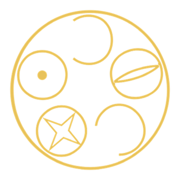

Papers, findings and open apps on polyhedra, space-filling and icosahedral order, by DICTO
About. DICTO is a geometric sculptor in Osaka. The work grows out of building with recycled PET bottles and from three open apps on one shared geometry: Kaleidohedra, Rhombiverse and Polyhedraverse.
This record gathers all of DICTO's published geometry in one place. It opens with a short essay, Quanta of Space, then lists the papers in four chapters: Atoms (new solids), Bonds (how pieces fill space), Shells (layers round a core) and Cycles (rules that turn one shell into the next).
Each paper has its own DICTO DOI, which always opens its newest version. The numbers (#1, #2 …) are the paper numbers on dictospheres.com; DICTO's findings are numbered separately, F1, F2 …. What changed in each version is listed at the end.
Is space smooth all the way down, or is it built from pieces, as a wall is built from stones? Thinkers have asked this for two and a half thousand years. These works take the question literally: they look for exact sets of solid pieces that fit together, with no gaps, into shells, cycles and whole spaces.
Leucippus and Democritus taught that the world is made of indivisible atoms moving in the void. The atoms differ only in shape, arrangement and position. Lucretius put the teaching into verse: “nothing exists per se except atoms and the void”. The atoms were pieces, but no one said what shapes they had.
Plato gave them shapes. In the Timaeus the four elements are four regular solids: fire is the tetrahedron, air the octahedron, water the icosahedron and earth the cube. All four faces are built from just two right triangles. The fifth solid, the dodecahedron, was used “for the whole”. It was the first tile kit for matter: a small set of exact pieces from which everything is assembled.
Aristotle answered that solid atoms must fill space. He wrote (On the Heavens III.8) that among solids two do: the pyramid and the cube. He did not say which pyramid. His commentators took it to be the regular tetrahedron, which on its own leaves a small gap, and argued over it for centuries. Read as he wrote it, he was right: many pyramids fill space. Paper #44, Aristotle’s Pyramid, proves which pyramids cut from the centres of the Platonic solids do. One dimension up, even the regular tetrahedron closes, twenty round every corner of the 600-cell (#63). Paper #65, The Red Queen 120-cell, proves that all five of his pyramids are the cores of the regular four-dimensional solids, with exactly his proportions.
Johannes Kepler nested the five solids between the planets’ spheres (Mysterium Cosmographicum, 1596). In The Six-Cornered Snowflake (1611) he explained the snowflake by the packing of equal small units, the question that became the Kepler conjecture. Paper #8, The Euclid–Kepler–Pacioli Cell, finds all five Platonic solids nested on 13 points of one repeating cell.
In 1900 Max Planck found that energy comes in quanta. In loop quantum gravity, space itself does too. Carlo Rovelli and Lee Smolin showed in 1995 that area and volume come in discrete amounts. In 2011 Eugenio Bianchi, Pietro Doná and Simone Speziale showed that each quantum of volume can be read as a small convex polyhedron, fixed by the areas and directions of its faces. Space becomes a network of polyhedra joined face to face.
There is an honest difference. In that theory two neighbouring quanta share a face of the same area, but not, in general, of the same shape (Freidel and Speziale, 2010). The pieces need not fit. Our pieces always fit exactly, corner to corner.* Other approaches, such as causal sets, build spacetime from points rather than solids.
This collection makes no claim about physics. It shares the question and the form: what are the smallest exact pieces from which space can be built, and how do they join?
* The rule of halves and the Swap Rule. Equal balls pack most closely in flat layers, and each new layer can sit on the one below in one of two ways, so the layers can be stacked in endless orders: the cubic packing, the hexagonal packing, and every mixture of the two, repeating or never repeating. Cutting space round the balls and the holes between them gives exact pieces. We proved that, whatever the order, each piece is borrowed from the two pure packings, whole or as two halves, the top half fixed by the layer above and the bottom half by the layer below (#57, #61). A few kinds of half-piece build every stacking there is. The Swap Rule works like a conservation law: the two mixed pieces always add up to the two pure ones, so mixing moves volume between pieces but never creates or loses it. Both rules hold in real crystals: rock salt, cadmium iodide, zinc blende and the Laves phases (#64). The pieces are finite in kind, local in rule and conserved in sum.
Read this way, the works fall into four chapters.
The shells have the longest history. Aristotle wrote that among solids the pyramid fills space (On the Heavens III.8). His commentators argued for centuries over how many tetrahedra meet round a point: Simplicius and Averroës said twelve, others twenty, and Thomas Bradwardine saw that the icosahedron cuts from its centre into twenty equal tetrahedra without being able to say whether they are regular (Lagarias and Zong, 2012). They are not: they are the Cleo-Icos (#19, #44). Kepler nested the Platonic solids in shells round the Sun (Mysterium Cosmographicum, 1596). In four dimensions the twenty tetrahedra do close regularly, round every vertex of the 600-cell, found by Schläfli about 1852 and modelled in sections by Alicia Boole Stott about 1900. In The White Queen 600-cell (#63) its 600 cells fall into 15 shells round one vertex, each shell of one kind of piece, round a core of twenty Cleo-Icos filling an icosahedron: Aristotle's pyramid, Bradwardine's twenty and Kepler's shells, one dimension up.
Some patterns repeat, like the tiles of a bathroom floor. Others never repeat, yet are perfectly ordered, like the Penrose tiling. These works use the same pieces to build both.
For most of history, order in matter meant repetition. A crystal was a single cell copied without end, and five-fold symmetry was thought impossible in it. In 1982 Dan Shechtman found a metal alloy with sharp five-fold diffraction. Quasicrystals, ordered but never repeating, earned him the Nobel Prize in 2011. Matter has two kinds of order, and the question became how they meet.
The quanta in these works sit on that border. One exact kit builds the repeating octet and also a Fibonacci crystal that never repeats (#40, The DICTO OG Family on Every Stacking). In A Fibonacci Spine (#30), five repeating packings of the OG meet round a five-fold axis. The copies removed along that axis form exactly the Fibonacci chain, the simplest never-repeating order. The golden shells of the Spheres of Dharma (#23) repeat only by growing φ³ larger at each turn. One kit, two orders: the pieces themselves are the bridge.
Three things recur. Finite kits are enough: a handful of exact shapes builds shells and spaces without limit. The golden ratio appears wherever five-fold symmetry does, and it decides when shells close. And the pieces join the two orders of matter, the repeating and the never-repeating.
The ancients guessed that space was made of shaped pieces, and modern physics has returned to the idea. These works build such pieces exactly and test them, and each paper that follows ends in a proof.
Sources for the introduction: Plato, Timaeus (tr. B. Jowett); Lucretius, On the Nature of Things (tr. W. E. Leonard); Aristotle, On the Heavens III.8 (tr. J. L. Stocks); J. Kepler, Mysterium Cosmographicum (1596) and Strena seu de nive sexangula (1611); D. Shechtman, I. Blech, D. Gratias, J. W. Cahn, Phys. Rev. Lett. 53 (1984) 1951; C. Rovelli, L. Smolin, Nucl. Phys. B 442 (1995) 593; L. Freidel, S. Speziale, Phys. Rev. D 82 (2010) 084040; E. Bianchi, P. Doná, S. Speziale, Phys. Rev. D 83 (2011) 044035; S. Surya, Living Rev. Relativ. 22 (2019) 5.
Single solids, each an exact new piece.
| # | Work | About | DOI |
|---|---|---|---|
| #62 | Shadows of the Fourth Dimension: Deltahedra that Join Differently (2026) | DICTO's idea: the shadows and slices of the four triangle-faced solids of four-dimensional space give new deltahedra. Two are variants of known deltahedra that join differently (one closes three round an edge, one fills space alone); four 600-cell patterns rebuild exactly with equal edges, among them Shadow-17, two J11 glued on their pentagons, and Slice-48, 92 triangles with tetrahedral symmetry. DICTO DOI: 10.5281/zenodo.23687223 | |
| #49 | The Polyhedral Stretching Theorem (2026) | DICTO's idea: the long hexagon he saw in the dodecahedron layer of #47, a void with two dodecahedra overlapping it. Proved: slide any solid with equal edges one edge-length, not along one of its edges, and every edge of the swept shape stays the same length; for the dodecahedron this gives the DICTO stretched solids, with three- and four-cap forms, and the icosahedron gives a new-looking family. | DICTO DOI: 10.5281/zenodo.23566671 |
| #45 | The Reuleaux Platonic Solids (2026) | DICTO's idea: a ball on every corner of a Platonic solid, as wide as the solid; the common part, named by its look. Proved: the narrowest width is exactly the solid's span, and along each face axis the width is 2√(3/4 + r²) − 2r, so dual pairs agree exactly; the face axis as the widest is a conjecture. | DICTO DOI: 10.5281/zenodo.23529499 |
| #41 | The DICTO Jewel (2026) | Euclid's dodecahedron carved by its neighbours' stellas: twelve Penrose windows, volume 3/16, and with stellas it fills space; the Jewel-Tetra, Jewel-Octa and Jewel-Rhombi, every tiling with loose stellas, the octet pattern, and the Hexa and Hexa-Key, all exact. | DICTO DOI: 10.5281/zenodo.23496353 |
| #31a | The DICTO OCD Stella (2026) | A short introduction: the icosahedral hull of the golden adapter pieces round one Ogdoecontahedron in its body-centred cubic packing, cut along the 8 joints: 48 corners, 50 faces; copies fill exactly 151/2 − 267√5/8 ≈ 87.12% of space, and twelve round a small one fill an outer one exactly at φ²; with regular octahedra on the second network its crystal fills 1423/32 − 3113√5/160 ≈ 96.33%. | DICTO DOI: 10.5281/zenodo.23430870 |
| #34a | The DICTO Hecatogdoecontahedron (2026) | A short introduction: the DICTO Hecatodihedron and its polar, the DICTO Ogdoecontahedron, interlocked in the truncated icosahedron's midsphere as one self-dual compound, 182 faces and 182 corners; core and hull are the classical rectified and joined truncated icosahedron; the pairing and the name are what is new. | DICTO DOI: 10.5281/zenodo.23430868 |
| #35b | The DICTO Palintriacontahedron (2026) | A short introduction: the icosidodecahedron's central pyramids flipped out at full height; the hull of the 32 tips, 60 triangles, each half a rhombic-dodecahedron rhombus: the member of the dodecahedron–icosahedron hull family at edge ratio 3/√5, exact. It interlocks with the next icosahedron, bridging one turn of the golden cycle to the next. | DICTO DOI: 10.5281/zenodo.23430866 |
| #35a | The DICTO Metaxyhexecontahedron (2026) | A short introduction: the hull of an icosahedron and a dodecahedron at edge ratio 9/φ⁴, in closed form, exact; the solid that closes the golden cycle's last gap, touching the rhombic triacontahedron and the next icosahedron. | DICTO DOI: 10.5281/zenodo.23430864 |
| #31 | The DICTO Ogdoecontahedron (2026) | The Spheres of Dharma turned inside out: the polar dual of the Hecatodihedron, a convex solid of 20 regular hexagons and 60 kites, exact in every coordinate. Joined on its hexagons it forms pyrochlore networks and a body-centred cubic packing filling exactly 77.43% of space. | DICTO DOI: 10.5281/zenodo.23404688 |
| #18 | The DICTO Hexa (2026) | A cube of 8 DICTO Hexa Jewels, its Hexa-Key and their 5 : 3 checkerboard. | DICTO DOI: 10.5281/zenodo.23376320 |
| #28 | The DICTO Truncated-Icosahedral Hecatodihedron (2026) | A convex solid of 102 faces from the Spheres of Dharma: the truncated icosahedron with a low pyramid on each hexagon, at the height where neighbouring triangles flatten into rhombi; exactly, the joined truncated icosahedron with its five-fold corners cut flat. Version 2 adds the DICTO Hecatogdoecontahedron. | DICTO DOI: 10.5281/zenodo.23360857 |
| #20 | The FUJI Family (2026) | FUJI as one member of a family of pyramids on flat-ended triangles, indexed by the antiprisms. With the golden breathing pyrochlore, the wheel bound, and Cleo-Icos & Antonius, a new space-filling pair from the golden rhombohedron. | DICTO DOI: 10.5281/zenodo.23357896 |
| #19 | AXE, CLEO and FUJI (2026) | The three pieces that close DICTO's thirteen-icosahedron cluster into one icosahedron of edge φ². AXE and CLEO are Mosseri–Sadoc tiles; FUJI is new. With printable nets. | DICTO DOI: 10.5281/zenodo.23351291 |
Solids named in the Bonds papers (each paper listed once, under Bonds): #59 Icosaxes Bloom, Bud and Seed, Lotus Jewel Bloom, Bud and Seed, Icosaxes Hexa, Lotus Hexa, Keyaxes and Icosaxes Kagome (DICTO's working names); #57 Chucky and Fang (the Janus c/h pieces) and the Triskelion Tetrahedron (the cubic piece); #56 Sonsam, Lahdeli, Ian Dury and Blockhead, with the keyed Sonsam-K, Lahdeli-K, Ian Dury-K and Rhombo-K; #55 David and Goliath (classical A15 shapes, named by DICTO); #51 Samson and Delilah; #48 Icosaxes and Unborn Axes, with the keyed Lotus Jewel Axes and Dodecaxes.
How pieces fill space together: exact kits, packings and lattices.
| # | Work | About | DOI |
|---|---|---|---|
| #72 | The Hexagonality Law in Real Materials IV: Oxides (2026) | DICTO's proposal that three-dimensional stacking rules replace chemical rules of thumb, tested on oxides. Proved: in a hexagonal perovskite of any stacking each octahedron shares faces with 2h neighbours and corners with 6(1 − h); in a layered cathode the lithium–metal face-sharing pairs number 2h per lithium site. BaRuO3 volumes lie on the law line and pressure walks them down h; charged LiCoO2 keeps lithium only where it shares no face, x ≤ 1 − h. In BaMnO3 the volume follows the law, the energy does not. DICTO DOI: 10.5281/zenodo.23728287 | |
| #71 | The Hexagonality Law in Real Materials III: Alloys and Hydrogen (2026) | DICTO's test of the law on alloys, from Ti-6Al-4V and Ti-Nb-Zr. Proved: in any close-packed stacking the face-sharing tetrahedral and octahedral hole pairs number h per metal atom, so at most 2 − h tetrahedral hydrogen sites are usable and a hydride MHx needs local h ≤ 2 − x: the brittle dihydrides of titanium and zirconium need fully cubic layers. Magnesium LPSO compositions follow the law layer by layer; cobalt and iron stackings come close; the high-entropy alloy CrCoNi departs, and Olson and Cohen's interface energy σ = 2J2 measures the distance. DICTO DOI: 10.5281/zenodo.23726064 | |
| #70 | The Hexagonality Law in Real Materials II: Entropy and Pressure (2026) | DICTO's test of the law's form on what chooses a stacking. The stacking entropy of hard spheres is about 90% of the law's form at close packing (Mau and Huse). Proved: a volume of the law's form lets pressure tilt only cubic against hexagonal and keeps the faults at 2 : 2 : 1. At first order pressure pushes silicon carbide toward cubic 3C, as experiments find, and tilts silicon and germanium the other way. DICTO DOI: 10.5281/zenodo.23723565 | |
| #69 | The Hexagonality Law and the Fibonacci Stacking: the Golden Ratio in the Volumes of a Never-Repeating Crystal (2026) | DICTO's bridge between repeating and never-repeating order, at the level of the pieces. Proved: in the Fibonacci stacking the share of hexagonal layers is 1/φ², hexagonal layers never touch, and the pieces come in golden proportions 1/φ³ : 1/φ² : 1/φ²; by the Hexagonality Law every average piece volume is exact in ℚ(√5). Periodic approximants of 15, 16, 26 and 63 layers; the Laves phases keep the law on them exactly, the foot atom included. With a picture of a Fibonacci crystal of rock salt. Listed in its Version 2, with the 26-layer approximant (90 of 90) and a section on hard-core supersymmetric fermions. DICTO DOI: 10.5281/zenodo.23721038 | |
| #68 | Real Polytypes and the Hexagonality Law: Silicon Carbide, Silicon, Germanium and Cerium against the Straight Line (2026) | DICTO's idea to test the law on real crystals. Proved: in the physicists' layer (ANNNI) model a property is a straight line in the hexagonality exactly when its couplings beyond the nearest vanish, and its faults then stand 2 : 2 : 1. Published data: silicon carbide on the line within its precision; silicon and germanium bend by about 0.04%, a relaxation the ideal geometry does not have; germanium's fault energies near 2 : 2 : 1, silicon's not; cerium's double-hexagonal form 1.2% larger than its cubic form. DICTO DOI: 10.5281/zenodo.23719275 | |
| #67 | Random Stackings and Stacking Faults: the Hexagonality Law at Work (2026) | DICTO's idea to find where the laws matter in real matter. However the layers are stacked, even at random, every kind of piece averages exactly its pure share, fixed by the share of hexagonal layers alone, the number measured in randomly stacked colloids and in stacking-disordered ice; every stacking fault moves space by whole layer shares, 1, 2 and 2 in cubic crystals and 1, 2 and 3 in hexagonal ones. The Laves foot atom, beyond the law's proof, keeps it on every stacking up to eight layers (390 of 390). Listed in its Version 2, with three figures. DICTO DOI: 10.5281/zenodo.23718636 | |
| #66 | The Focus: One Study of Space in Pieces, and the Hexagonality Law (2026) | DICTO's conclusion that everything is the same study, set out as one map of how the threads of the recent papers meet, with the status of every link. Main theorem, the Hexagonality Law: where a piece is fixed by its two neighbouring layers, the Swap Rule is equivalent to each layer holding, in every stacking, exactly what it holds in its own pure stacking, so every kind of piece totals a straight line in the hexagonality; checked exactly in 1064 cases across pyrochlore, rock salt, cadmium iodide (by kind of layer), zinc blende and the Laves phases. Listed in its Version 2, which calls DICTO's radial cell projection an independent rediscovery of the classical reflection construction. DICTO DOI: 10.5281/zenodo.23717687 | |
| #64 | The Swap Rule in Crystals: Rock Salt, Cadmium Iodide, Zinc Blende and the Laves Phases on Every Stacking (2026) | The rule of halves (#57) and the Swap Rule (#61) taken to four classical crystal families, with the holes filled by atoms as in real crystals: the Swap Rule holds in all four, in all 299 cases where it can be tested. In rock salt and cadmium iodide every octahedral piece is exactly half cubic and half hexagonal; in zinc blende the atoms keep the rule of halves while the empty holes still swap exactly; in the Laves phases, near the real alloys, every stacking is cut into exactly the same pieces. DICTO DOI: 10.5281/zenodo.23709753 | |
| #61 | The Swap Rule: Ganesha, the Janus Tetrahedra of Squashed Stackings, and the Border at True Close Packing (2026) | Found by DICTO's idea of looking for simple rules in pictures of computed values: with the layers of any close-packed stacking squashed or stretched, proved exactly for every spacing from half the close-packed squash upwards that every hole piece is a top half from the pure stacking of the layer above and a bottom half from that of the layer below; the two mixed pieces always add up to the two pure ones (the Swap Rule), and true close packing is the exact border where the tetrahedral pieces turn into Janus pieces, which DICTO named Ganesha. DICTO DOI: 10.5281/zenodo.23682596 | |
| #60 | DICTO Janus c/h Pyrochlore (2026) | DICTO's idea of carrying the rule of halves to the pyrochlore network, the corner-sharing tetrahedra hidden in every diamond-like crystal (the middles of its bonds), its layers stacked in any order; proved exactly with #57's engine: in every close-packed stacking, for every weight from −11/36 to 1/4, every piece is borrowed from the pure cubic or hexagonal stacking — balls by their own layer, diamond atoms by their nearest layer, and the open spaces as Janus c/h halves where cubic meets hexagonal; the cubic walk passes through the tetrahedral–truncated tetrahedral honeycomb. | DICTO DOI: 10.5281/zenodo.23678750 |
| #59 | The Icosaxes Hexa: Bloom, Bud and Seed (2026) | DICTO's idea of the Hexa's move with icosahedral symmetry, proved exactly: twenty Icosaxes on the corners of a dodecahedron, slid towards the centre, touch as the Icosaxes Bloom (twelve windows), close into the Icosaxes Bud at exactly 1/φ of that distance and fill into the Icosaxes Seed, one solid, at exactly one third (with Lotus Jewel Axes at 1/φ³); eight Icosaxes round an Unborn Axes make the Icosaxes Hexa, the same solid as nine passing through each other along the whole golden bond, and the Icosaxes Kagome network shares every Icosaxes between exactly two blocks; keyed, its piece has volume φ². | DICTO DOI: 10.5281/zenodo.23677485 |
| #58 | From the Octet to Every Stacking: the Web of Bonds (2026) | The series paper: papers #40–#57, from DICTO's PET-bottle-cap DICTOspheres and the Polyhedraverse app to the rule of halves — however layers of equal balls are stacked, the space is shared out into pieces of only finitely many kinds, each borrowed, whole or in half, from the cubic and the hexagonal stackings. No new results; each part ends with the exact statement of the paper it retells. | DICTO DOI: 10.5281/zenodo.23665944 |
| #57 | The Rule of Halves: the Holes of Every Close-Packed Stacking (2026) | DICTO's idea of following the web of bonds onto every close-packed stacking, proved exactly: a tetrahedral hole's piece is the cubic or hexagonal piece of its nearest layer; an octahedral hole's piece is a top half and a bottom half, each from the layer on its side; so all stackings share a finite catalogue of pieces (appendix with exact volumes), and where a cubic layer meets a hexagonal one appear the Janus c/h pieces, Chucky and Fang, each exactly the mean of its two parents. | DICTO DOI: 10.5281/zenodo.23647898 |
| #56 | Sonsam and Lahdeli: the Delian Bond on the Twinned Octet, with Ian Dury, Blockhead and Keyed Switch Points (2026) | Names by DICTO: the web of bonds followed on the twinned (hexagonal) octet. Its own equal-volume pair, Sonsam and Lahdeli (√2/6 each, at the single root of an irreducible cubic), then a stop the cubic side lacks, Ian Dury (13√2/54) with the 60° rhombohedron, and Blockheads (√2/4) where the cubic side has cubes; the keying lemma (keys change the pieces, never the web) with Sonsam-K, Lahdeli-K, Ian Dury-K and Rhombo-K; and the Sunstar of #42 read as rock salt's switch point keyed with Euclid's roofs. | DICTO DOI: 10.5281/zenodo.23635823 |
| #55 | David and Goliath: Jessen's Icosahedron and the Tetrahedron in the A15 Weight Walk (2026) | Names by DICTO: in the A15 structure the weight walk of #53 lands exactly, at one weight, on Goliath, the convex hull of Jessen's icosahedron, and David, a tetrahedron, filling space 2 : 6; the classical A15 picture of Frank and Kasper reached by the global theorem, with the octet, rock salt and zinc blende pairs as further support. | DICTO DOI: 10.5281/zenodo.23632358 |
| #53 | The Global Web of Bonds: How Bonds Hand Over Across Crystal Networks (2026) | DICTO's idea that the DICTONIC hand-overs recur elsewhere, proved for ten crystal networks and the perovskite: every weight walk exactly, every switch and the bonds on every stretch; a single switch where only unlike bonds remain (square tiling, trihexagonal tiling, rock salt's cubes, the octet) or gradual hand-overs; the bond between unlike pieces can never break. | DICTO DOI: 10.5281/zenodo.23631140 |
| #52 | The Web of Bonds: How the DICTONIC Bonds Hand Over (2026) | Both DICTONIC loops are weighted tilings of fixed points, the caesium chloride and fluorite crystal structures; the web of bonds, one bond per shared face, is the exact dual. The golden bonds hand over gradually, with no switch; the Delian bonds hand over at the octet, the one point where a single kind of bond holds both pieces. The weights read as squared atom sizes, the touching ranges end at Pauling's limits, and real crystals sit on the loops. | DICTO DOI: 10.5281/zenodo.23629252 |
| #50 | One Move Each: Classical Cut-and-Glue Space-Fillers Built Exactly (2026) | Five classical space-fillers that books build by cutting and gluing, among them the elongated, Bain and Bilinski dodecahedra, each made exactly by one setting of Kaleidohedra's lattice moves (shear, Cell = 1, stretch), with exact corners, volumes and symmetry. | DICTO DOI: 10.5281/zenodo.23606894 |
| #51 | The Delian Bond: Samson, Delilah and the Octet Between Kepler's Rhombic Dodecahedron and the Cube (2026) | The third pass: one sliding cut through the octet's tetrahedra and octahedra gives pairs of convex solids that fill space, from Kepler's rhombic dodecahedron to the cube; at one cut, DICTO's Samson and Delilah have equal volume, one doubled and one halved (the Delian bond); with #48, the six DICTONIC SOLIDS in three DICTONIC BONDS. | DICTO DOI: 10.5281/zenodo.23606828 |
| #48 | The Golden Split: Icosahedra, Unborns and AXE Become Two Convex Space-Fillers (2026) | The second pass of #47: in the cubic lattice of icosahedra, cutting every AXE at its golden point turns the icosahedra and the Unborns into two convex truncated octahedra, DICTO's Icosaxes and Unborn Axes, that fill space; the only such point; the keyed Lotus Jewel Axes and Dodecaxes (√5 and 2); and the factor x family of mixed space-fillers. | DICTO DOI: 10.5281/zenodo.23596362 |
| #47 | Every Mix of the Platonic Solids Fills Space (2026) | DICTO's idea: connect the Platonic solids in any combination. Proved: every one of the 31 mixes, all at one edge length, fills space with only seven helper pieces, among them DICTO's Admiral Caps and the Dogstar. | DICTO DOI: 10.5281/zenodo.23551326 |
| #44 | Aristotle's Pyramid (2026) | DICTO's question: what could Aristotle have meant by the pyramid that fills space? Proved: of the five Platonic face pyramids, only the cube's alone, the tetrahedron's with the octahedron's, or these together fill space; the dodecahedron's and the Cleo-Icos never do. The golden fix: Cleo-Icos with Antonius; the whole solids with Euclid's roofs. | DICTO DOI: 10.5281/zenodo.23529497 |
| #42 | The DICTO Sunstar (2026) | The Jewel's twin: regular dodecahedra and Dogstars fill space; the Dogstar as an exact stellation, the Star Chain Reaction, the Sunstar-Tetra, Sunstar-Octa and Sunstar-Rhombi, and the Sunstar-Hexa and its Key, all exact. | DICTO DOI: 10.5281/zenodo.23497702 |
| #40 | The DICTO OG Family on Every Stacking (2026) | One exact kit builds the octet, the gyrated octet, the classical polytypes and a Fibonacci crystal that never repeats. Two short rules say why: the twin rule (the mirror twin is the solid turned 60°, the spinel law) and the fit rule (a solid that stays in its layer fits every stacking); the DBT fits every stacking, and the golden envelope fails at twin planes by exactly the tips the DBT removes. | DICTO DOI: 10.5281/zenodo.23490114 |
| #37a | The DICTO Ogdoecontahedron on the Gyrated Octet (2026) | The companion to #37: in the gyrated octet the OGs twin across every layer (the OG turned 60°, the spinel law); one exact cell kit for every stacking, with twin caps, bipyramids and a mirror middle piece; the OCD Stella twins too, and the DICTO Belted Triacontahedron fills the octahedra pole to pole; the DICTO Octahedrally Truncated Triacontahedron fits every stacking, and each solid with one fill piece fills space. Version 4: it is the DICTO Jewel's packing, not the solid, that does not twin. | DICTO DOI: 10.5281/zenodo.23484012 |
| #37 | The DICTO Ogdoecontahedron on the Octet Truss (2026) | Exact space-filling kits with the OG in the octahedra of the octet truss: golden-section keys; an exact Penrose link between facing five-fold stars, with three Penrose cores; golden envelopes filling exactly 10/φ⁶ of space, with a two-shape kit and a tetartoid core; and one-piece glue with exact OG imprints, keyed with the OG's own kites so that twelve lock round one OG. | DICTO DOI: 10.5281/zenodo.23457016 |
| #36 | Golden Bodhi Pyrochlore (2026) | The gap of the Ogdoecontahedron's bcc packing, exact: 72 cone pieces, limbs crossing in golden rhombi, the canonical golden cut that shatters, the GBPC that every golden fill needs, and no face-to-face tiling of what remains by golden rhombohedra; DICTO's Bull-horns OG adaptor fills the whole gap with one piece, three per copy. | DICTO DOI: 10.5281/zenodo.23451210 |
| #30 | A Fibonacci Spine (2026) | Five periodic packings of the DICTO Ogdoecontahedron meet round a five-fold axis; with the central copy, the copies removed along the axis are exactly the canonical Fibonacci chain, checked exactly, until minimal removal thins it at height 12.8. | DICTO DOI: 10.5281/zenodo.23396361 |
| #17 | Kagome Hulls (2026) | Six corner-sharing networks of solid clusters, one rule and its icosahedral exception. | DICTO DOI: 10.5281/zenodo.23376317 |
| #26 | DICTO ATOM-13×13 (2026) | Thirteen clusters of twelve around one, six golden and seven periodic, side by side, with 24 buildable kits. | DICTO DOI: 10.5281/zenodo.23333183 |
| #25 | DICTO Spheroid-13 RD (2026) | A true rhombic dodecahedron wrapped by twelve keyed pieces: a nearly round block of thirteen that fills space by translation alone. | DICTO DOI: 10.5281/zenodo.23332821 |
| #13 | The DICTO Dodeca-13 (2026) | The 13-dodecahedron cluster made solid, with two exact gap pieces. | DICTO DOI: 10.5281/zenodo.23284281 |
| #14 | The DICTO-Star (2026) | An icosidodecahedron, 12 dodecahedra and 20 tridiminished icosahedra closing exactly. | DICTO DOI: 10.5281/zenodo.23284213 |
| #8 | The Euclid–Kepler–Pacioli Cell (2026) | All five Platonic solids nest on 13 points in one periodic cell. | DICTO DOI: 10.5281/zenodo.23284106 |
Pieces closing into nested shells round a core, each layer filled exactly.
| # | Work | About | DOI |
|---|---|---|---|
| #65 | The Red Queen 120-cell: Aristotle's five pyramids as the cores of the regular four-dimensional solids (2026) | The polar of the White Queen, named the Red Queen by DICTO, built exactly from her: 120 dodecahedra in nine layers round one (1, 12, 20, 12, 30, 12, 20, 12, 1), its corners in her fifteen Cleo shells, both lists palindromes, and a core of twelve pentagonal pyramids. Proved: all five of Aristotle's pyramids are the cores of the regular four-dimensional solids seen in perspective, with exactly his proportions; the star polytope {5/2,5,3} has dodecahedra round a corner. A full exact atlas: 124 slice patterns, and four shadows each the polar of the White Queen's middle slice. Listed in its Version 2, with direction vectors, exact checks, a table of all 124 patterns and Alicia Boole Stott's 1900 series. DICTO DOI: 10.5281/zenodo.23716140 | |
| #63 | The White Queen 600-cell (2026) | An exact atlas of every slice and shadow of the 600-cell: 62 slice patterns, twelve all triangles, every four-sided face explained (squares are octahedron equators, kites are tilted cells). Each shadow resolves into two exact halves; round one vertex the 600 cells stand in 15 shells, each one kind of piece, round a core of 20 Cleo-Icos. Its most graceful slice is Humpty Dumpty, the 48-vertex egg. Listed in its Version 3: Version 2 added DICTO's observation that the fifteen shells read the same backwards, mirrored angles adding up to 180°; Version 3 gives the direction vectors and exact checks, a table of all 62 patterns, and Alicia Boole Stott's 1900 series, now read (cell-first, through the corner layers). DICTO DOI: 10.5281/zenodo.23690856 | |
| #35 | Vajrayana (2026) | A companion to Progenitors: the dodecahedron returns inside the golden cycle as the hull of DICTO's Cleo star, filled exactly by 82 pieces of four kinds; the last loose step is closed by a new solid that touches both sides, the DICTO Metaxyhexecontahedron, each of its two layers one kind of piece; the cycle grows to twelve stations. | DICTO DOI: 10.5281/zenodo.23429911 |
| #34 | Progenitors (2026) | The DICTO Hecatodihedron and Ogdoecontahedron as a twin pair: on their own they never close golden; set into the Spheres of Dharma in the dodecahedron's place they close it again on φ⁹, and the cycle holds the core and hull of two dual compounds. | DICTO DOI: 10.5281/zenodo.23413184 |
| #29 | Theaetetus (2026) | An icosahedron held exactly by its Cleo-Icos, grown to the DICTO Hecatodihedron in two exact stories: 215 pieces in closed layers, and 102 clean pieces that cut the icosahedron and dodecahedron with the same twenty cones. | DICTO DOI: 10.5281/zenodo.23378070 |
| #27 | Capturing the In-betweens (2026) | The in-between stages of the Chain of Karma, Spheres of Dharma and Bodhi Seed as solids: the great stellated dodecahedron, the excavated dodecahedron, the rhombic hexecontahedron, and a further convex solid, the DICTO Truncated-Icosahedral Hecatodihedron. | DICTO DOI: 10.5281/zenodo.23345502 |
| #24 | The Bodhi Seed (2026) | Twelve rhombic triacontahedra and one more inside a triacontahedron φ² times larger; the gap fills exactly with three convex piece types, in two ways. | DICTO DOI: 10.5281/zenodo.23311353 |
| #23 | Spheres of Dharma (2026) | Six icosahedral shells, each filled exactly, repeating every φ³: icosahedron, icosidodecahedron, dodecahedron, fullerene cage, rhombic triacontahedron. | DICTO DOI: 10.5281/zenodo.23310833 |
| #22 | The Chain of Karma (2026) | The regular icosahedron and dodecahedron filled exactly as shells of each other, alternating without end (built and checked to 20,497 pieces). The centres of the Lotus seed's 13 icosahedra match the 600-cell's central vertex and its 12 neighbours, scaled by φ²; and its surface has the C60 fullerene pattern. Only the icosahedron is ever subdivided; the gap pieces occur at every scale. | DICTO DOI: 10.5281/zenodo.23310541 |
Rules that turn one shell into the next and return, with or without end.
| # | Work | About | DOI |
|---|---|---|---|
| #54 | One Turn Is a Gnomon: the Golden Cycle Step by Step, and the Polar of the Keyed Pair (2026) | DICTO's idea: carry the classical gnomon (Euclid, Heron), the piece that makes a figure into a larger copy of itself, into three dimensions through his golden cycle of twelve nested solids. Built exactly: the whole turn is a classical gnomon, the next icosahedron φ³ larger, and no single step or shorter run is. The step pieces are the Julias and Pimentels, named by DICTO in tribute to Júlia Pimentel's square method; also the polar of the keyed pair (Lotus Jewel Axes and Dodecaxes). | DICTO DOI: 10.5281/zenodo.23633365 |
| #43 | DICTO Kyushindo Cores (2026) | Towers and spires round exact cores in Fibonacci beats: Cleo Towers, Polar Cleo Towers, the OG core of 80 Aktis, the OTT rays and the OG turned out. Main theorem: any icosahedral solid sits inside φ times its foot-point hull, so the golden turned-out tower nests for ever; the polar Hecatodihedron sequence, the ribbons, the new solids TQP-252 to TQP-672 and the tower catalogue. | DICTO DOI: 10.5281/zenodo.23532013 |
| #39 | The DICTO OG Family: Four Steps Up and Four Down (2026) | Universal PiTet's step run from the Ogdoecontahedron, outward and in reverse: eight new icosahedral solids, the DICTO KRE, PHE, TPP and DPHP up and the DICTO TPH, TQH, TQP and TQHD down, all exact; near the OG the shells nest and fill exactly, then both directions break the same way. | DICTO DOI: 10.5281/zenodo.23488944 |
| #38a | The DICTO Kepler–Poinsot–UP Cycle (2026) | The tall companion to Universal PiTet: the great and small stellated dodecahedra in an endless φ³ cycle, every shell filled exactly by one pattern, in golden reciprocity. | DICTO DOI: 10.5281/zenodo.23464021 |
| #38 | Universal PiTet: The DICTO PiTet Proposition (2026) | From the Cleo star outward in spherical shells: an endless, self-polar cycle of four solids, icosidodecahedron, rhombic triacontahedron, DICTO GTI and DICTO FPD, closing exactly 10/φ⁴ larger each turn, with exact shell pieces, Monkey Staff B, five-sided Vajras and hexagonal Cleos. Version 3: new figures, and the rule's prior art (the three-dimensional antipedal construction). | DICTO DOI: 10.5281/zenodo.23463305 |
| #33 | Double Vision – Both Cycles in One Space (2026) | The Spheres of Dharma and their inside-out reversal in one space: one sphere of reciprocation toggles which shells the two cycles share, and no sphere gives both. Cut against each other they make one solid of exact convex pieces, 536 of 12 kinds per turn in one setting and 502 of 11 in the other. | DICTO DOI: 10.5281/zenodo.23407107 |
| #32 | Inverted Shells: The Spheres of Dharma Turned Inside Out (2026) | Polar reciprocation turns the Spheres of Dharma inside out into a new exact golden cycle, every layer filled by one kind of piece. The great stellated dodecahedron locks into its outer gap at exactly one size, a dual pair fits its inner gap in reverse order, and the cycle repeats inward without end. | DICTO DOI: 10.5281/zenodo.23405029 |
| Work | About | DOI |
|---|---|---|
| Kaleidohedra by DICTO (2026) | DICTO's findings (F1 onwards) with the open apps' code, in versioned releases. Findings published there without a separate paper: F1 DICTO skewed rhombic dodecahedron; F5 Regular-hexagon elongated dodecahedron (found independently; known, Grünbaum 2010); F10 DICTO Jewel (EKP windows); F11 The stretched dodecahedron; F12 Star Chain Reaction; F15 DICTO Jewel clusters; F16 Sunstar clusters. The DICTONIC world (live 24 October 2026) runs the three DICTONIC BONDS with one slider. | DICTO DOI: 10.5281/zenodo.23173809 |
| DICTO Solids: Exact Geometry (2026, data set) | Exact coordinates of DICTO's solids and fills (version 4: 44 solids, 6 space fillings and 4 packings that are not fillings), each checked exactly (1062 checks), with the permanent D-numbers D1–D86. | DICTO DOI: 10.5281/zenodo.23606967 |
DICTO · dictospheres.com